Data Analysis with R
12 - Intro2Statistical Modelling - Part 1
Saskia A. Otto
Postdoctoral Researcher
Lets close the loop:

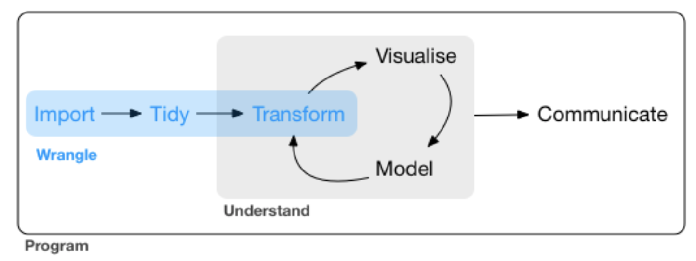
source: R for Data Science by Wickam & Grolemund, 2017 (licensed under CC-BY-NC-ND 3.0 US)
Some basics in descriptive statistics...

Data distribution – the numerical description
PARAMETER vs STATISTIC
Parameter
a measure that describes the entire population (e.g. $\mu, \sigma^{2}$)
Statistics
Parameters are rarely known and are usually estimated by statistics describing a sample (e.g. $\bar{x}, s^2$)
Parameters of location or central tendency
- Mode: No built-in function
- The mode is the most frequently occurring value in a distribution. It is the only measure of central tendency that can be used with nominal data.
- Median:
median(x)orquantile(x, probs = 0.5)- The middle most value in a data series is called the median: half the scores are above the median and half are below the median. It is also called the "50%-percentile".
- Arithmetic mean:
mean()$\mu; $ \(\bar{x} = \frac{1}{n} \sum_{i=1}^{n}x_{i}\)- Often called simply the 'mean' or 'average' but one needs to be specific to differentiate from the other means.
- Weighted mean:
weighted.mean(x, w, ...)
- Each data value \(x_{i}\) has a weight \(w_{i}\) assigned to it.
p
Parameters of location or central tendency
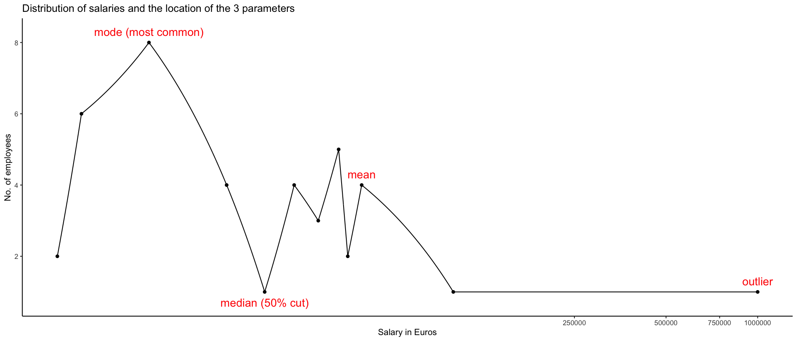
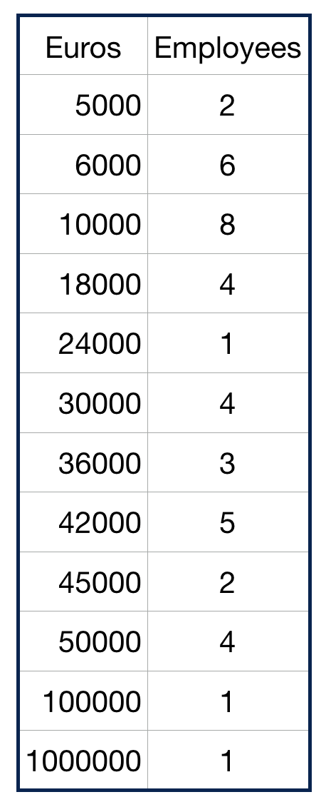
The arithmetic mean can be a good measure for roughly symmetric distributions but can be misleading in skewed distributions since it can be greatly influenced by extreme scores.
Parameters of spread or variability
- Range:
range() - Variance:
var() - Standard deviation:
sd() - Standard error: no built-in function (
sd(x)/sqrt(length(x))) - Coefficient of variation: no built-in function (
sd(v)/mean(v))
Variance \(\sigma^{2}, s^{2}\)
The variance is the 'Mean Sum of Squared' (MSS) distances of individual measurements from the overall mean:
- Sum of distances from mean equals zero → therefore the square!

Variance \(\sigma^{2}, s^{2}\)
The variance is the 'Mean Sum of Squared' (MSS) distances of individual measurements from the overall mean:
- Sum of distances from mean equals zero → therefore the square!
- We don’t want our measure of variability to depend on the sample size, so the obvious solution is to divide by the number of samples to get the mean squared deviation: \[\sigma^{2} = \frac{\sum_{i=1}^{n} \left(x_{i} - \bar{x}\right)^{2}} {n-1}\] The n-1 in the equation represents the so-called degrees of freedom (df): \(df = N-p\) (with p = number of parameter estimated from the data).
Suppose ..
a sample has 5 numbers and a mean of 4 → the sum has to be 20. If the first 4 numbers are 1, 1, 4, and 10, the last number has to be 4: so we have 4 df for 5 numbers.
The variance is
- most commonly used
- measure for the overall spread
- less sensitive to extreme scores
- useful for judging quality of data:

Variance and the role of sample size
Here is a simulation to demonstrate how the variance spread changes with sample size
plot(c(0,32), c(0,15), type = "n",
xlab = "Sample size",
ylab = "Variance")
for (df in seq(3,31,2)) {
for( i in 1:30) {
x <- rnorm(df, mean = 10, sd = 2)
points(df, var(x))
}
}
Press 'p' in the html document for more info.

p
Standard deviation SD (\(\sigma, s\)) and standard error SE
The standard deviation is just the square root of the variance \[\sigma = \sqrt{\frac{\sum\limits_{i=1}^{n} \left(x_{i} - \bar{x}\right)^{2}} {n-1}}\] The standard error normalizes the SD by the square root of the sample size n \[SD = \frac{\sigma}{\sqrt{n}}\]
Standard deviation SD (\(\sigma, s\)) and standard error SE
Both parameters are typically used for error bars in graphs:
- Standard deviation and error are expressed in the same units as the data.
- If data is normal distributed: 68% of all measurements fall within one standard deviation of the mean, 95% of all measurements fall within two standard deviations of the mean.
- The greater the sample size n the higher \(s^{2}\) and \(s\) → SE gives an estimate of variability independent of sample size.
- The greater n, the smaller SE.
Coefficient of variation CV
- Allows for comparison of the variation of populations that have significantly different mean values.
- Is defined as the ratio of the standard deviation to the mean: \(CV = \frac{s}{\bar{x}}\).
- It is often reported as on a scale of 0 to 100% by multiplying the above calculation by 100.
- Tends to be biased with small sample sizes.
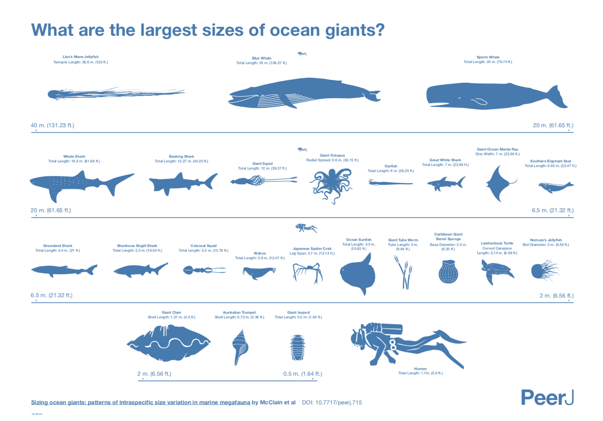
source:
Sizing ocean giants: patterns of intraspecific size variation in marine megafauna
by McClain et al., DOI: 10.7717/peerj.715
Something on outliers
- Might incorrectly influence analysis
- 1 outlier only → take it out
- Several tests (e.g. regression) model the center of the data; if you are more interested in the outlier apply outlier-analysis techniques
- Outliers in 1 dimension are not necessarily outliers in 2 or more dimensions
But which one is an outlier? That depends on the dimensional perspective.

But which one is an outlier? That depends on the dimensional perspective.
1-dimensional (left panel): Point A might be an outlier of variable y, but not of x; C is an outlier of x but not y, and B is an outlier of both x and y separately
2-dimensional space xy (left panel): A and C could be outliers (both are far away from the regression line) but B is not an outlier anymore, since it lies on the regression line. Right panel: Point A could be an outlier in the x-space but is definitely one in the xy-space
Statistical modelling
Models are
- a simplified description of a complex entity or process.
- derived from an hypothesis → one hypothesis may produce numerous competing models.
- compare models with observed data → assess fit of model(s) to sample data.


sources: reality tree by
www.pixabay.com (CCO 1.0); stick man graph on the right J. Nielsen (masterthesis
"Conversion of Graphs to Polygonal Meshes", Technical University Copenhagen), www.tchami.com
Aim of statistical modelling
- To identify the most relevant predictor variables.
- To determine the parameter values that link predictor and response variable.
- We are looking for a model that
- "explains the greatest amount of variation in the data..."
- "that produces the least amount of non explainable variation"
- "fits best to the data"
- Both Y and X can be continuous and/or categorical data
Linear statistical models

\[Y = constant + coefficient * X_{1} + coefficient2 * X_{1} ... + error\]
Y: response variable
\(X_{1}, X_{2}\): predictor variables
constant: mean or intercept of Y (value when all X‘s equal zero)
coefficient: regression slopes or treatment effects
error: part of Y not explained or predicted by X‘s
Linear statistical models (cont)
predictor variable and parameters relating predictor to response variable are included in the model as a linear combination (nonlinear terms also possible)
term „linear“ refers to the combination of parameters, not the shape of the distribution: linear combination of series of parameters (regression slope, intercept) where no parameter appears as an exponent or is divided / multiplied by another parameter
All models are linear regression models
\[Y_{i} = \alpha + \beta_{1}*X_{i} + \beta_{2}*X_{i}^2 + \epsilon_{i}\] \[Y_{i} = \alpha + \beta_{1}*(X_{i}*W_{i}) + \epsilon_{i}\] \[Y_{i} = \alpha + \beta_{1}*log(X_{i}) + \epsilon_{i}\] \[Y_{i} = \alpha + \beta_{1}*exp(X_{i}) + \epsilon_{i}\] \[Y_{i} = \alpha + \beta_{1}*sin(X_{i}) + \epsilon_{i}\]
Why use linear models?
- Linear regression technique well established framework
- Advantages:
- easy to interpret (constant and coefficients),
- easy to grasp (also interactions, multiple X)
- coefficients can be further used in e.g. numerical models
- easy to extend: link functions, fixed and random effects, correlation structures,… → GLM, GLMM
- BUT:
- Dynamics not always linear → transformations do not always help or would lead to information loss
Linear models in

- use function
lm(formula, data) - to look at the estimated coefficients:
coef(model) - to look at the complete numerical output:
summary(model)
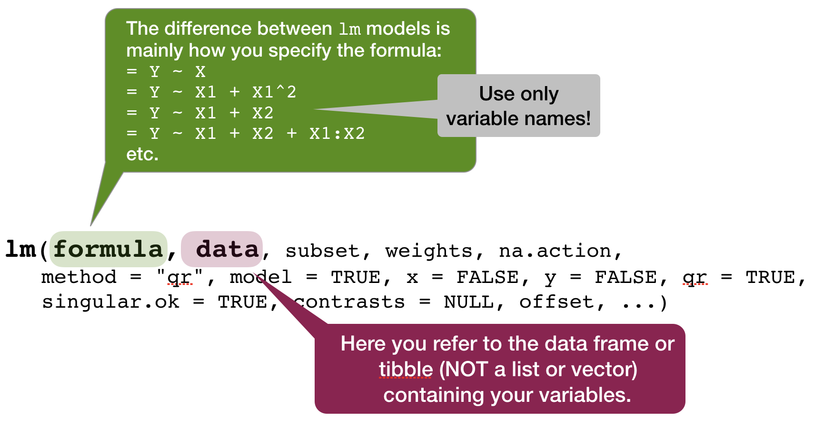
Your turn...
Exercise 1: Iris length relationship
Apply a linear regression model to the iris dataset and model the petal width as a function of the petal length (Petal.Width ~ Petal.Length)
Look at the summary of your model, what would be the corresponding linear regression equation?
Interpreting simple linear regression models
Sample regression equation
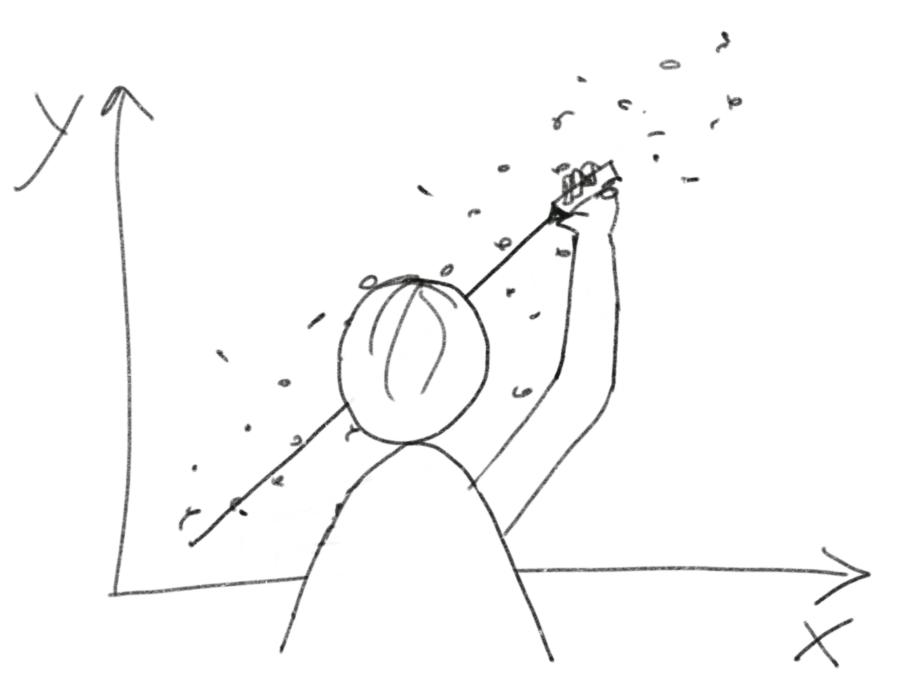
Most common way of writing the equation:
\(y = a + b*x\)
- that is the sample equation for the predicted y values
Sample regression equation
Most common way of writing the equation:
\(y = a + b*x\)
- that is the sample equation for the predicted y values
a
sample intercept estimates → expected value of y when x is 0
b
sample regression slope estimates → the expected increase in y associated to a one unit increase in x
Sample regression equation
Most common way of writing the equation:
\(y = a + b*x\)
- that is the sample equation for the predicted y values
Recall:
- Parameter = a measure that describes a POPULATION (e.g. \(\mu, \sigma^{2}\))
- Statistics = a measure that describes a SAMPLE (e.g. \(\bar{x}, s^2\))
So we need to be specific whether we want to specify the parameters for the population or sample and whether for observed or fitted y values
Population equation:
- for observed Y values: \(y_{i} = \alpha + \beta*x_{i} + \epsilon_{i}\)
- for predicted Y values: \(\mu(y_{i}) = \alpha + \beta*x_{i}\)
Sample equation:
- for observed Y values: \(y_{i} = a + b*x_{i} + e_{i}\)
- for predicted Y values: \(\hat{y} = a + b*x_{i}\)
coefficents
The population parameters $\alpha$, $\beta$ and $\sigma^2$ (population variance) are estimated by $a$, $b$ and $s^2$ (sample variance).
How are a and b estimated?
Underlying mathematical tool:
- Ordinary Least Squares (OLS)
- OLS finds parameters a and b, based on minimising the residual sum of squares (\(SS_{Residual}\))
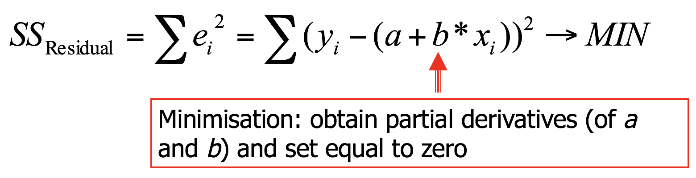
Regression through origin
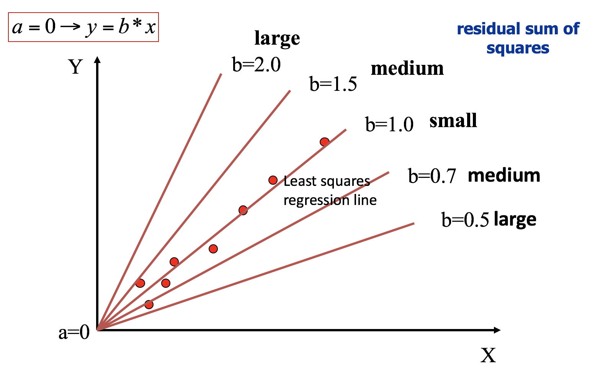
Residual sum of squares ( with a = 0)
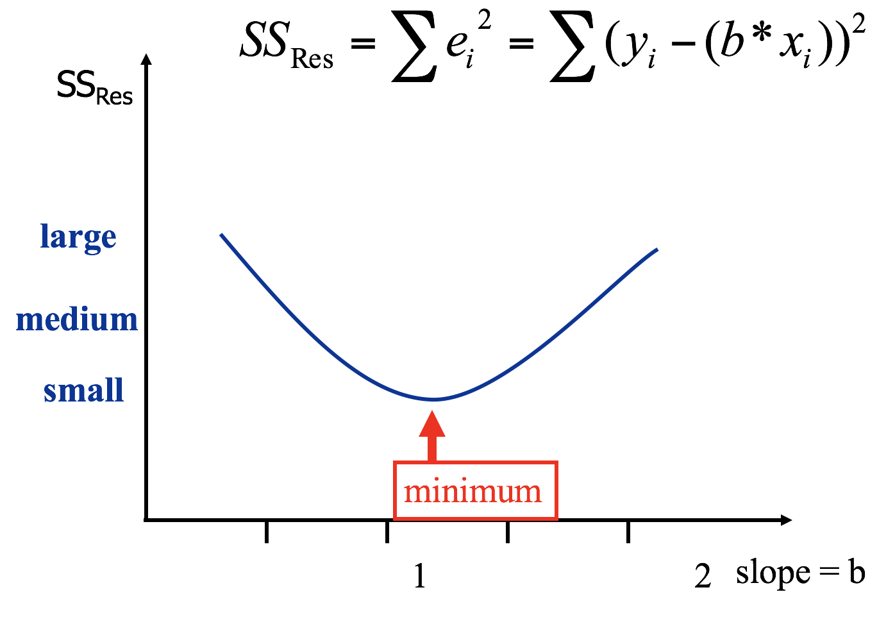
Minimising \(SS_{Residual}\) numerically
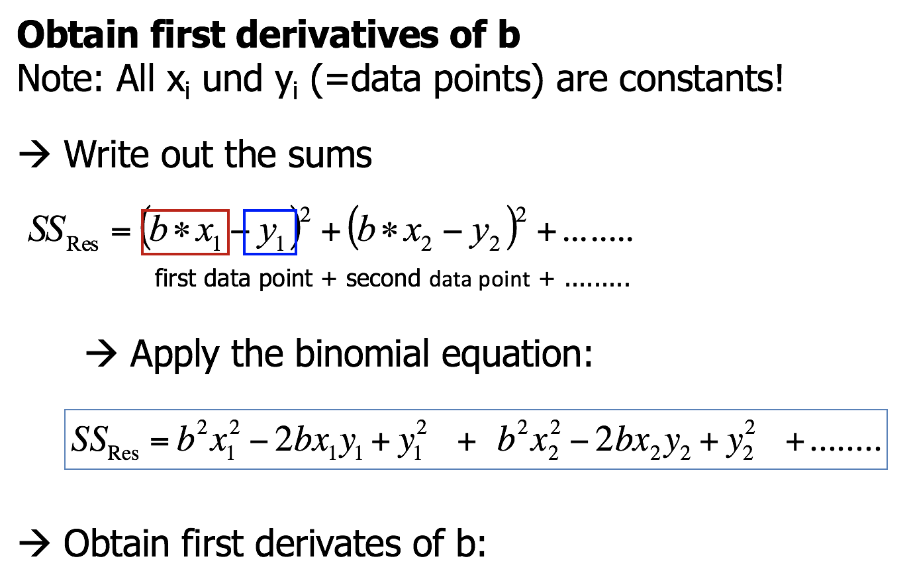
Minimising \(SS_{Residual}\) numerically
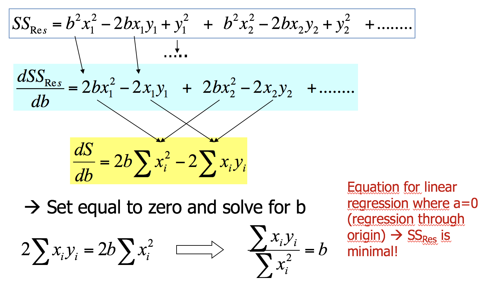
Coefficient estimations
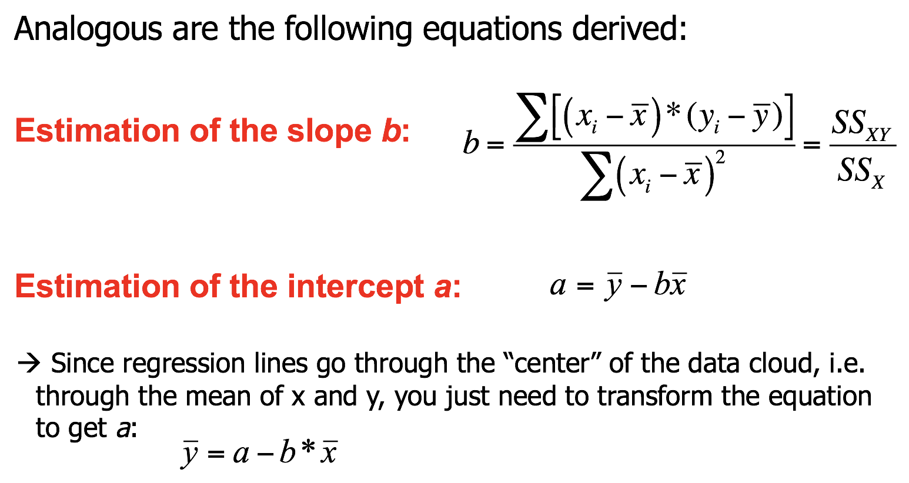

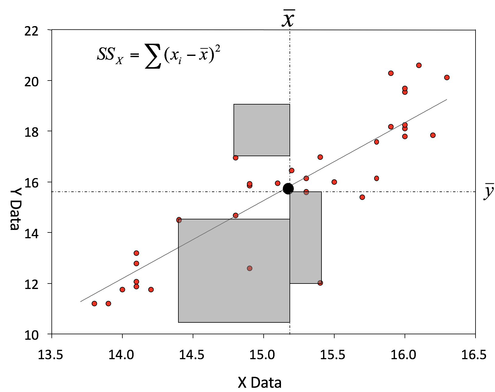
An example: Salinity as a function of depth
(taken from the ICES hydro dataset, station 0076, 2015-02-01)
mod <- lm(sal ~ pres, data = sal_profile)
coef(mod) # same as: coefficients(mod)
## (Intercept) pres
## 5.57662340 0.01282616
How to interpret these coefficients?
- Salinity at the surface (when depth is 0m) is around 5.58
- Each 1m increase in depth is associated with an INCREASE in salinity by 0.013 units.
Visualize your linear regression
Use geom_smooth and set the method argument to the name of the modelling function (in this case 'lm'). If you don't want to show the standard error additionally, set se = FALSE:
p <- ggplot(sal_profile,
aes(x = pres, y = sal)) +
geom_point() +
geom_smooth(method = "lm",
se = FALSE)
p
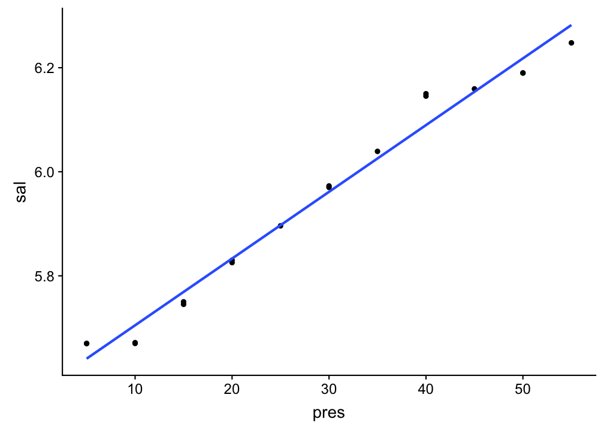
Visualize your linear regression manually
You can also compute the predicted values for your model using
predict(model)from the stats package → simply returns a vector, which you can add to your data using thedplyr::mutate()functionadd_predictions(data, model, var = "pred")from the modelr package (in tidyverse) → adds the variable 'pred' containing the predicted values to your data frame; useful when piping operations!
modelr::add_predictions(
sal_profile, mod) %>%
ggplot(aes(x = pres)) +
geom_point(aes(y = sal)) +
geom_line(aes(y = pred))
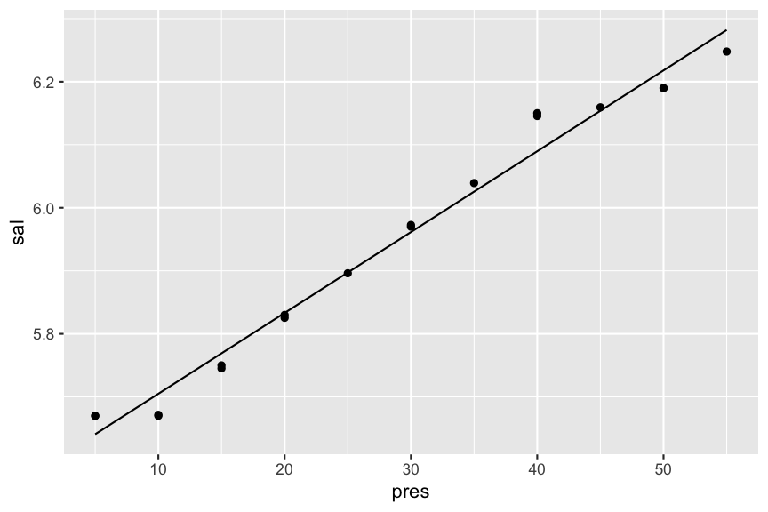
Predictions are best visualised from an evenly spaced grid of X values that covers the region where your data lies
- Add to the argument
newdatain a data frame that includes an even X sequence:predict(model, newdata = data.frame(x = seq(min(x), max(x), 0.1)))
- Easier: Use the function
modelr::data_grid(data, X1, X2)to generate this grid. If you have more than one X, it finds the unique variables and then generates all combinations.- Use this grid then for the
add_predictions(data = grid, model)function
- Use this grid then for the
library(modelr)
grid <- sal_profile %>%
data_grid(pres = seq_range(pres, 20)) # 20 evenly spaced values between min and max
add_predictions(grid, mod) %>%
ggplot(aes(x = pres)) + geom_line(aes(y = pred))
Visualize your regression including some statistics
- You can extract statistics from the model object directly or from functions applied on the model object such as
coef()orsummary()(as a help: look at the names or structure to see what you could extract). - Lets extract R-sq and the coefficients to show the equation in the plot
a <- round(coef(mod)[1], 3)
b <- round(coef(mod)[2], 3)
mod_summ <- summary(mod)
names(mod_summ)
## [1] "call" "terms" "residuals" "coefficients"
## [5] "aliased" "sigma" "df" "r.squared"
## [9] "adj.r.squared" "fstatistic" "cov.unscaled"
r_sq <- round(mod_summ$r.squared, 3)
Visualize your regression including some statistics
- Add model statistics as text in your ggplot using the
annotate("text", x, y, label)function. - You can use the
paste()function to concatenate text and values stored in objects:
p +
annotate("text", x = 20, y = 6.2,
label = paste("Sal =",a ,
" + ",b , "x Depth")) +
annotate("text", x = 15, y = 6.1,
label = paste("R-sq =", r_sq))
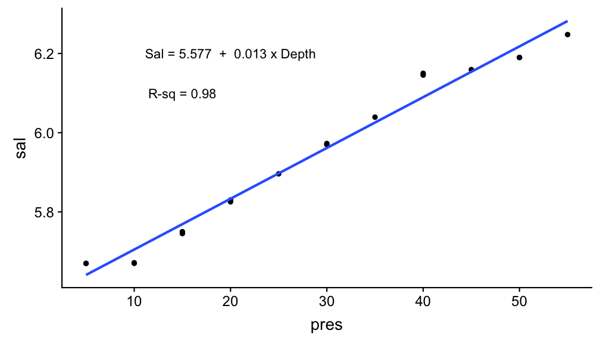
Your turn...
Exercise 2: Iris length relationship
Visualize your Petal.Width ~ Petal.Length model using
geom_smooth()predict()ormodelr::add_predictions()to add a line manually.- Try also to include the regression equation somewhere in the plot.
Aside: intercept terms
R includes an intercept term in each model by default
\[y = a + bx\]
y ~ x
Aside: intercept terms (cont)
You can include an intercept explicitly by adding a 1 to the formula term. If you want to exclude the intercept, add a 0 or substract a 1:
# includes intercept
mod1 <- lm(sal ~ pres, data = sal_profile)
mod1 <- lm(sal ~ 1 + pres, data = sal_profile)
# excludes intercept
mod2 <- lm(sal ~ 0 + pres, data = sal_profile)
mod2 <- lm(sal ~ pres - 1, data = sal_profile)
mod1
##
## Call:
## lm(formula = sal ~ 1 + pres, data = sal_profile)
##
## Coefficients:
## (Intercept) pres
## 5.57662 0.01283
mod2
##
## Call:
## lm(formula = sal ~ pres - 1, data = sal_profile)
##
## Coefficients:
## pres
## 0.1644
Not including a forces the intercept through the origin of coordinates
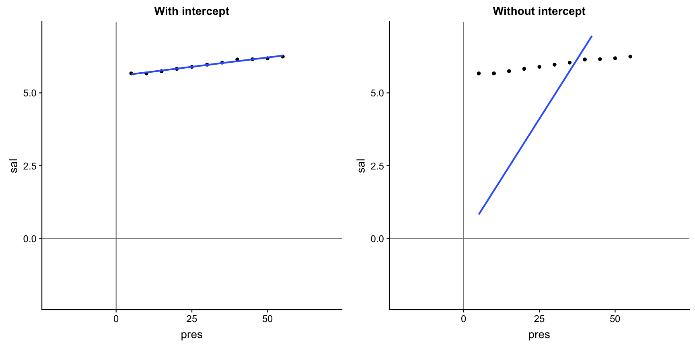
Your turn...
Exercise 3: Iris length relationship
Compare your Petal.Width ~ Petal.Length model including an intercept with the same without an intercept
- how do the slope coefficients differ?
- which regression line seems to fit better (in the plot)
Simply add both regression lines to the same plot. Or if you want to show both plots next to each other, save each plot under, e.g., p1 and p2 and use the following line of code
gridExtra::grid.arrange(p1,p2, nrow = 1)
Partitioning variation in linear models
Total variation in response variable (\(SS_{Y}\) or \(SS_{Total}\)) can be partitioned into two components
- Variation explained by predictor: \(SS_{Regression}\)
- Effect of continous variable (Regression)
- Difference between categorical groups (ANOVA)
- Variation not explained (residual or error variation): \(SS_{Residual}\)
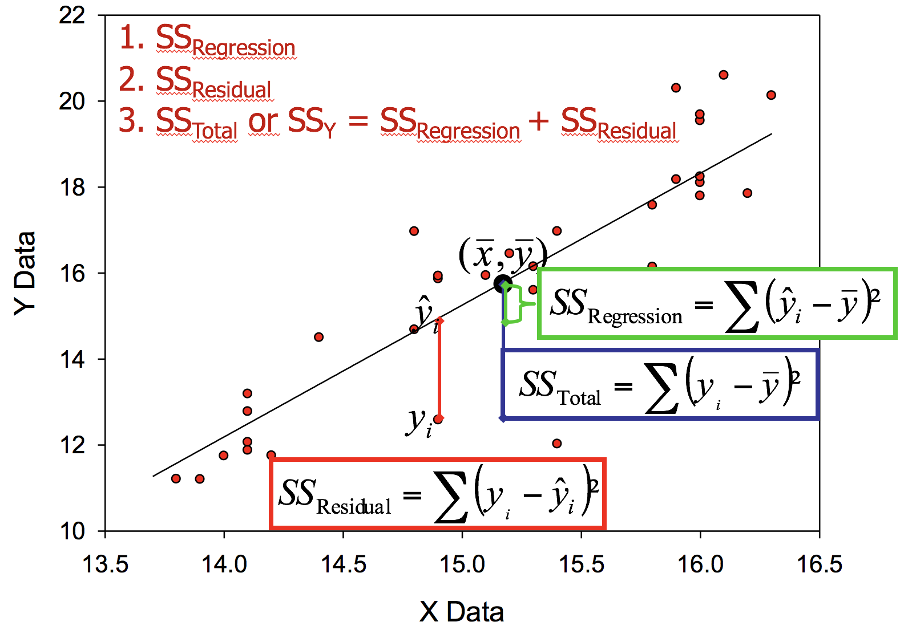
Coefficient of determination - \(R^{2}\)
- is a statistical measure of how close the data are to the fitted regression line: it represents the proportion of variation in Y explained by linear relationship
- R2 tells you how good the model is:
- 0% indicates that the model explains none of the variability of the response data around its mean.
- In ecology, 50% explained variance is already considered as very good.
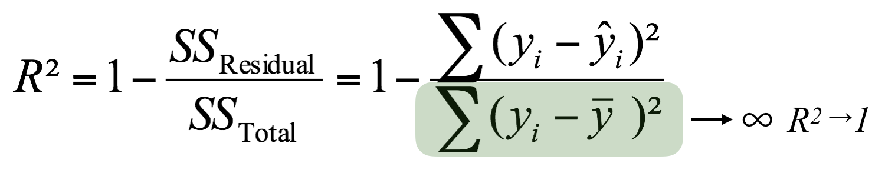
The total variance in the denominator increases with an increasing number of covariates, even if they do not contribute to the explained variance.
Coefficient of determination - \(R^{2}\)
When the model has more than one X variable: adjusted \(R^{2}\)
= corrected coefficient of determination
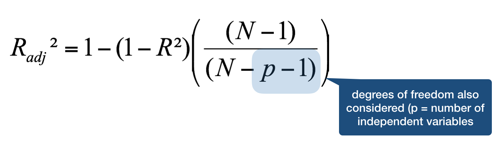
Your turn...
Exercise 4: Iris length relationship
How much variation in Sepal.Length is explained by Petal.Length in your model? Do you consider it a good model?
Mean Squares (MS) = Variances
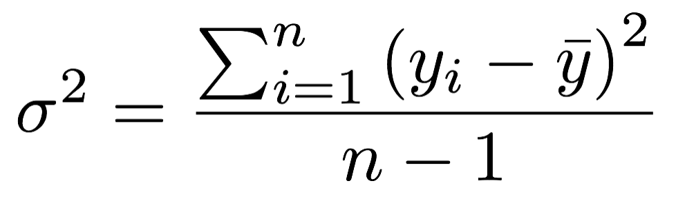
- SS depends on the sample size
- MS accounts for the sample size by dividing SS by the df → it represents the sample variance
- Degrees of freedom: dfTotal = dfRegression + dfResidual
Mean Squares (MS) = Variances
- SS depends on the sample size
- MS accounts for the sample size by dividing SS by the df → it represents the sample variance
- Degrees of freedom: dfTotal = dfRegression + dfResidual
\[MS_{Regression} = \frac{SS_{Regression}}{df_{Regression}}= \frac{\sum(\hat{y} - \bar{y})^{2}}{n-1}\]
\[MS_{Residual} = \frac{SS_{Residual}}{df_{Residual}} = \frac{\sum(y_{i} - \hat{y})^{2}}{n-2}\]
\[MS_{Total} = \frac{SS_{Total}}{df_{Total}} = \frac{\sum(y_{i} - \bar{y})^{2}}{n-1}\]
Reliability of estimated parameters: \(SE_{a}\) and \(SE_{b}\)
The uncertainty of the estimated slope and intercept
- increases with increasing variance and declines with increasing sample size
- is also greater when the range of X values is small (as measured by \(SS_{X}\))
The uncertainty of the intercept estimate additionally increases
- with the square of the distance between the origin and the mean value of X (as measured by \(\sum(x_{i}^2)\).
Reliability of estimated parameters: \(SE_{a}\) and \(SE_{b}\)
The uncertainty of the estimated slope and intercept
- increases with increasing variance and declines with increasing sample size
- is also greater when the range of X values is small (as measured by \(SS_{X}\))
The uncertainty of the intercept estimate additionally increases
- with the square of the distance between the origin and the mean value of X (as measured by \(\sum(x_{i}^2)\).
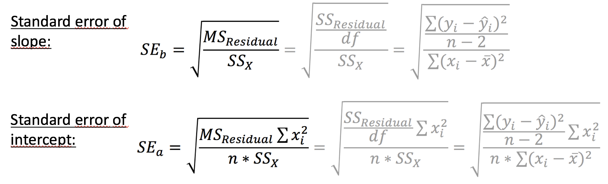
Lets look at the standard errors in the salinity-depth model...
summary(mod)
##
## Call:
## lm(formula = sal ~ pres, data = sal_profile)
##
## Residuals:
## Min 1Q Median 3Q Max
## -0.034885 -0.026902 -0.002162 0.013069 0.060330
##
## Coefficients:
## Estimate Std. Error t value Pr(>|t|)
## (Intercept) 5.5766234 0.0145514 383.24 < 2e-16 ***
## pres 0.0128262 0.0004551 28.18 4.58e-15 ***
## ---
## Signif. codes: 0 '***' 0.001 '**' 0.01 '*' 0.05 '.' 0.1 ' ' 1
##
## Residual standard error: 0.03057 on 16 degrees of freedom
## Multiple R-squared: 0.9803, Adjusted R-squared: 0.979
## F-statistic: 794.2 on 1 and 16 DF, p-value: 4.583e-15
Your turn...
Exercise 5: Iris length relationship
Look at the standard errors of your model.
- Would you consider these values close to the estimated coefficients?
- Do the standard errors indicate that the estimated slope of another sample would be similar to your iris sample or could they be totally different?
Visualize the standard error: simply set the seargument in geom_smooth() to TRUE.
- What do you think now about the reliability of your estimated coefficient?
Outlook into model inference
Reproducability of estimated coefficients
Imagine, each data point represents an individual fish and all data points together represent the entire population.
 If you take a random sample of 10 fish, how similar would the estimated coefficients be?
If you take a random sample of 10 fish, how similar would the estimated coefficients be?
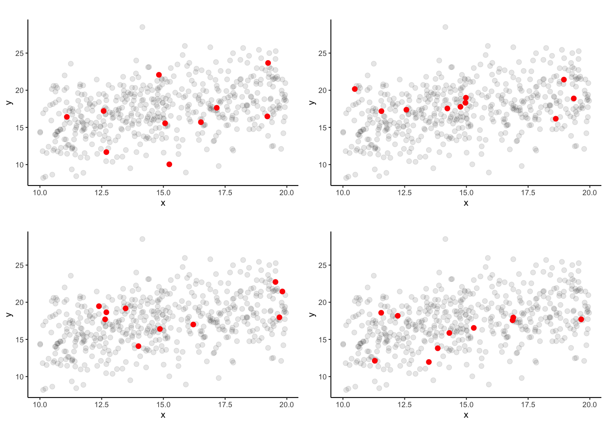 Guess: Which ones are more similar and which ones might be closer to the true population parameters?
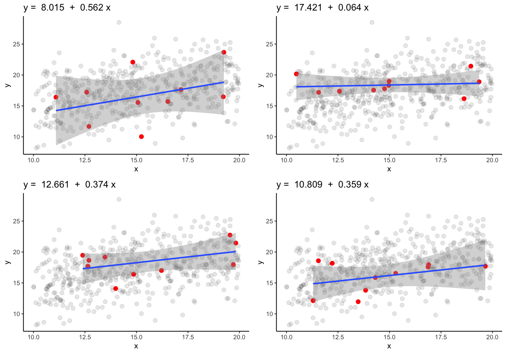
True parameters: \(\alpha\) = 10.269 and \(\beta\) = 0.475
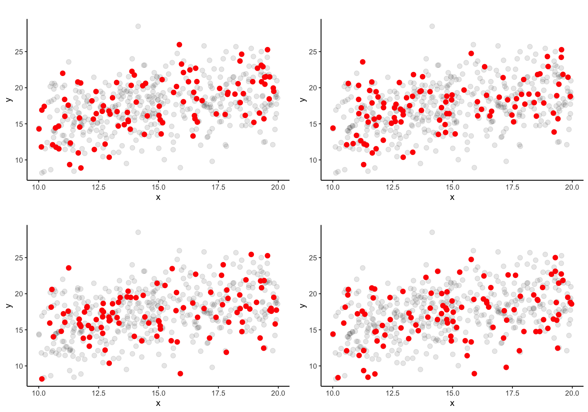
Lets increase the sample size to 100 fish!
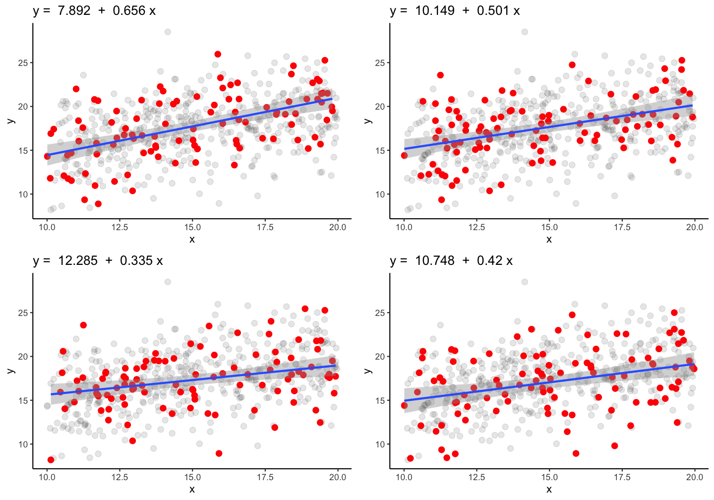
True parameters: \(\alpha\) = 10.269 and \(\beta\) = 0.475
Inference
2 approaches for reasoning about uncertain model parameters:
- Nonparametric statistics (bootstrapping)
- Parametric statistics
- If a model meets a set of assumptions, it is easy to calculate the probability of observing a given b when the true \(\beta\) is 0
Probabilities
If a p-value is very low ( < 0.05), it suggests that either
- you have an unusual sample
- the true \(\beta\) does not equal 0
- your model assumptions are wrong
Confidence intervals
Knowing probabilities also lets us calculate confidence intervals for \(\beta\)
# Models with n = 10
confint(mod_list[[1]], level = 0.95)
## 2.5 % 97.5 %
## (Intercept) -9.5084037 25.537982
## x -0.5626634 1.686557
confint(mod_list[[2]], level = 0.95)
## 2.5 % 97.5 %
## (Intercept) 11.2339388 23.6086437
## x -0.3394683 0.4677254
# Models with n = 100
confint(mod_list[[5]], level = 0.95)
## 2.5 % 97.5 %
## (Intercept) 4.7328994 11.0508714
## x 0.4490422 0.8620645
confint(mod_list[[7]], level = 0.95)
## 2.5 % 97.5 %
## (Intercept) 9.0867047 15.4839002
## x 0.1259973 0.5433739
Your turn...
Exercise 6: Interpret this summary output
##
## Call:
## lm(formula = len ~ age, data = cc_fn1)
##
## Residuals:
## Min 1Q Median 3Q Max
## -26.452 -12.315 -2.452 13.003 55.094
##
## Coefficients:
## Estimate Std. Error t value Pr(>|t|)
## (Intercept) 40.997 2.058 19.92 <2e-16 ***
## age 35.454 1.408 25.18 <2e-16 ***
## ---
## Signif. codes: 0 '***' 0.001 '**' 0.01 '*' 0.05 '.' 0.1 ' ' 1
##
## Residual standard error: 15.84 on 216 degrees of freedom
## Multiple R-squared: 0.746, Adjusted R-squared: 0.7448
## F-statistic: 634.3 on 1 and 216 DF, p-value: < 2.2e-16
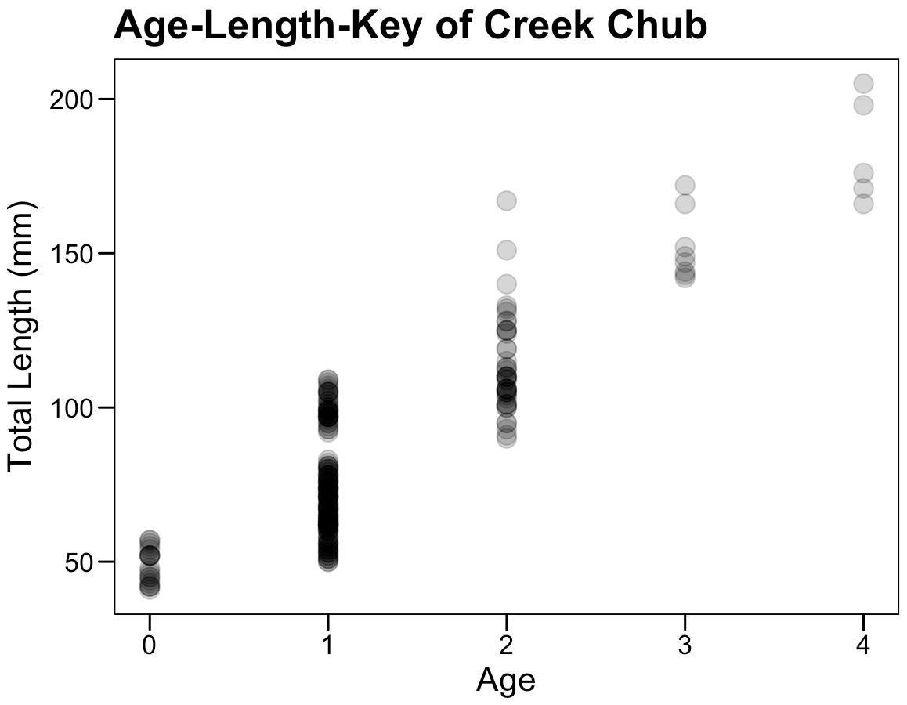
exercise is based on IFAR by D. Ogle, 2016
Overview of functions you learned today
descriptive stats: median(), quantile(), mean(), weighted.mean(),
range(), var(), sd()
linear regression model: lm(), coef(), summary(), confint()
geom_smooth(method = "lm"),
predict(), modelr::add_predictions()
How do you feel now.....?
Totally confused?

Try out the exercises and read up on linear regressions in
- chapter 23 on model basics in 'R for Data Science'
- chapter 10 (linear regressions) in "The R book" (Crawley, 2013, 2nd edition) (an online pdf version is freely available here)
- or any other textbook on linear regressions
Totally bored?

Apply a model for the weight variables in the iris dataset. Load the hydro data and model the temperature or oxygen as a function of depth. Choose a single stations or model across all stations.
Totally content?
Then go grab a coffee, lean back and enjoy the rest of the day...!

Thank You
For more information contact me: saskia.otto@uni-hamburg.de
http://www.researchgate.net/profile/Saskia_Otto
http://www.github.com/saskiaotto

This work is licensed under a
Creative Commons Attribution-ShareAlike 4.0 International License except for the
borrowed and mentioned with proper source: statements.
Image on title and end slide: Section of an infrared satallite image showing the Larsen C
ice shelf on the Antarctic
Peninsula - USGS/NASA Landsat:
A Crack of Light in the Polar Dark, Landsat 8 - TIRS, June 17, 2017
(under CC0 license)